Owner selection only. Real HTML/CSS browser renders. All device data is illustrative.
Recommend C: Two-level workbench. Stable location, fewer visible pages, and an optional wider table container. Read recommendation and trade-offs.
Slim labelled work-area rail; the current area opens in a flyout. Open HTML specimen
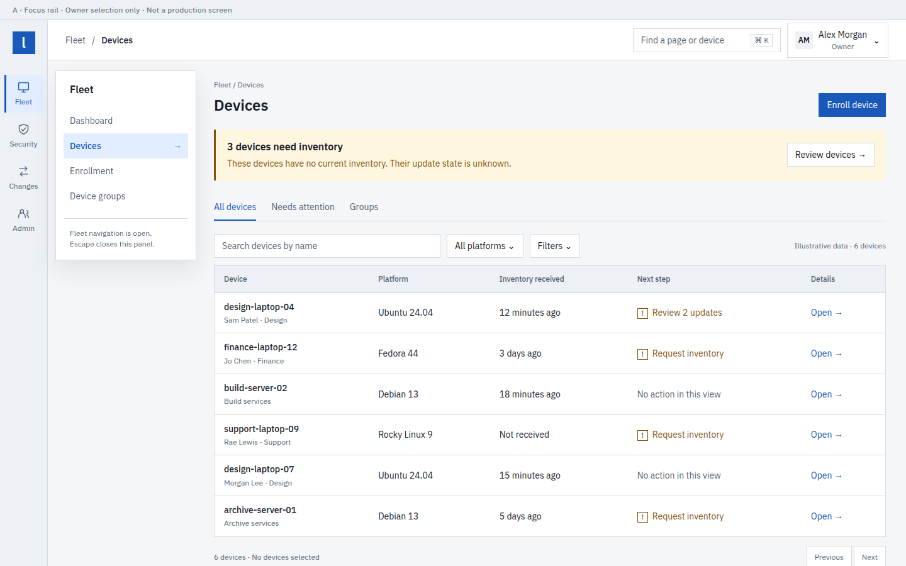
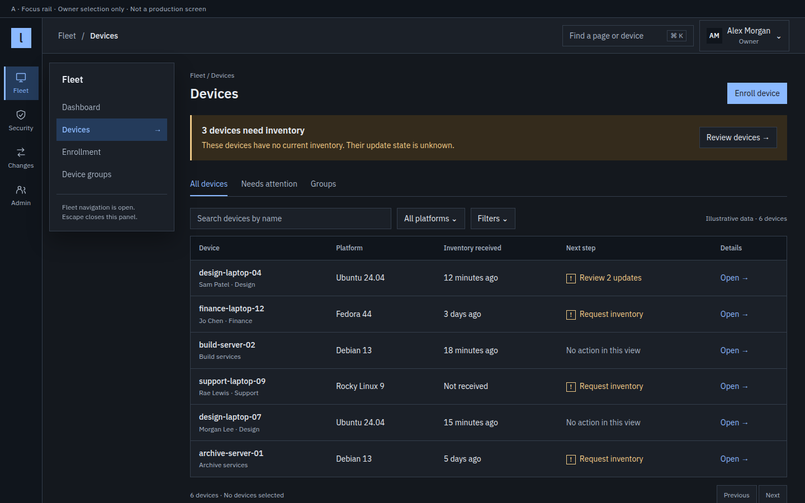
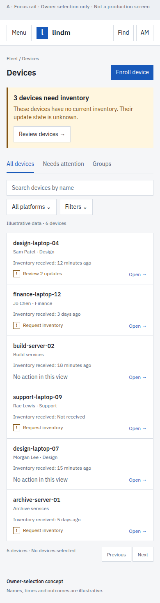
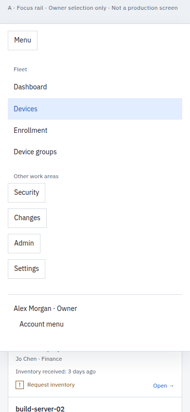
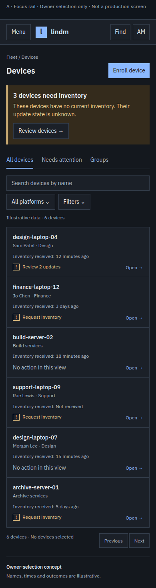
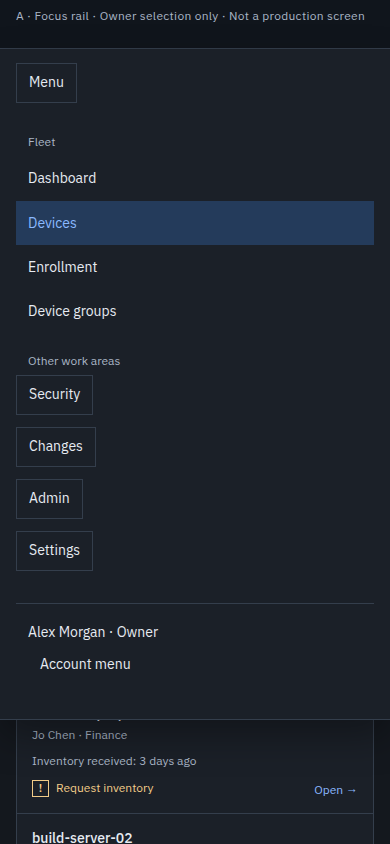
Top work-area bar; grouped mega-menus leave the most table width. Open HTML specimen
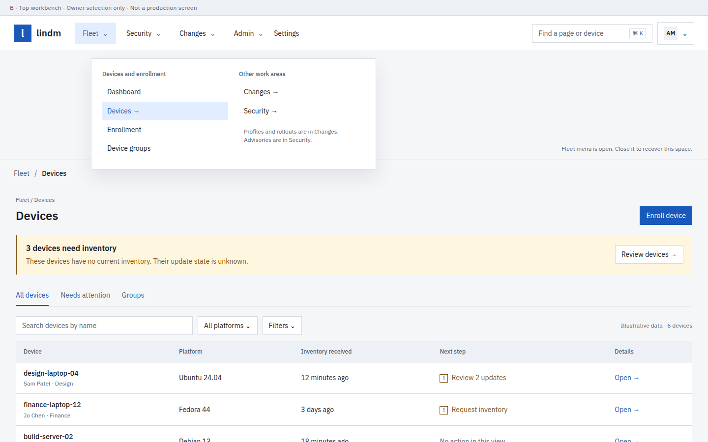
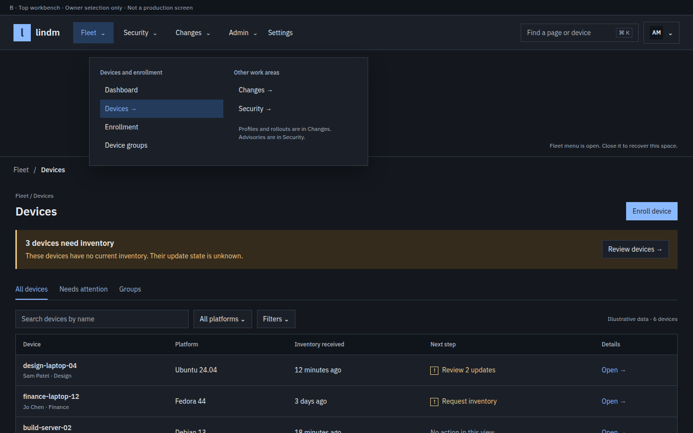
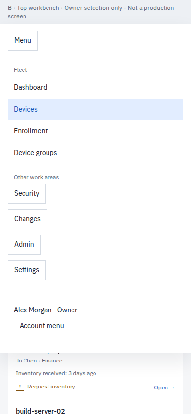
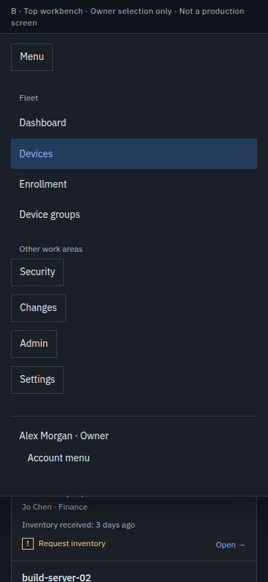
Stable work-area rail plus contextual pages; hide the second level for wide tables. Open HTML specimen
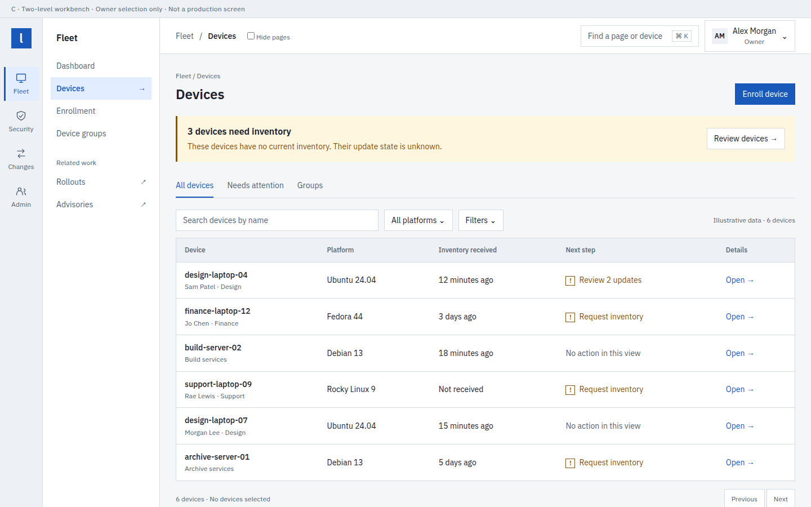
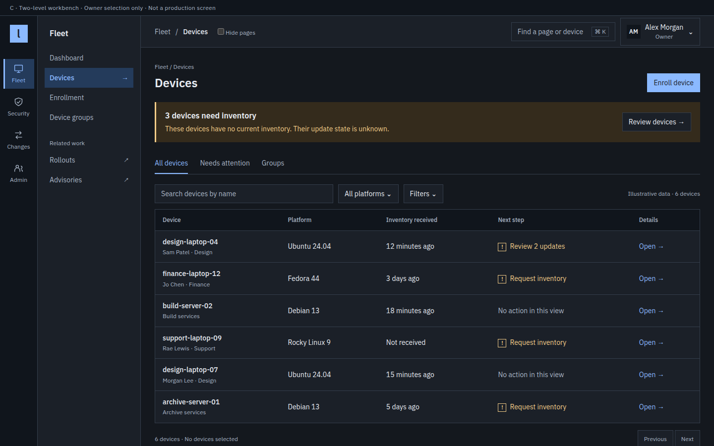
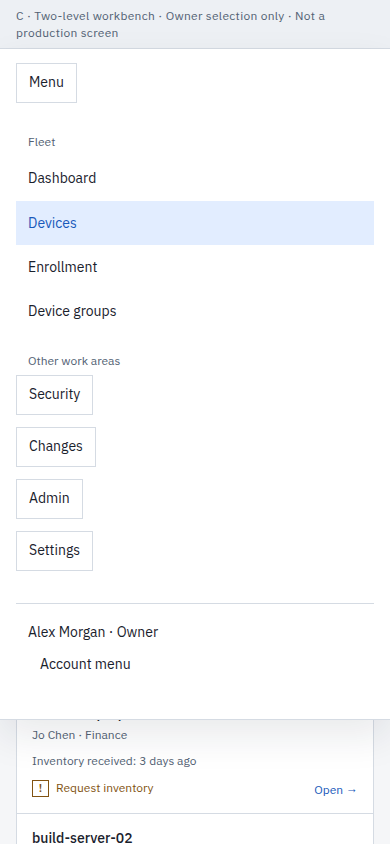
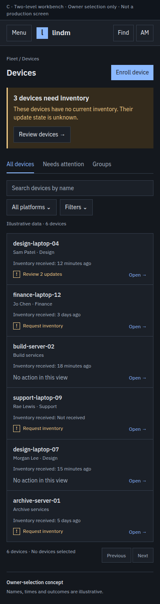
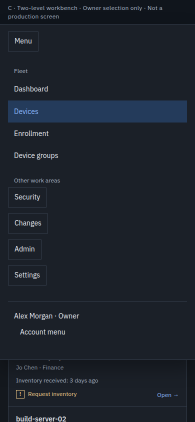
The owner selected C on 2026-10-13. These drawings remain the original selection record.